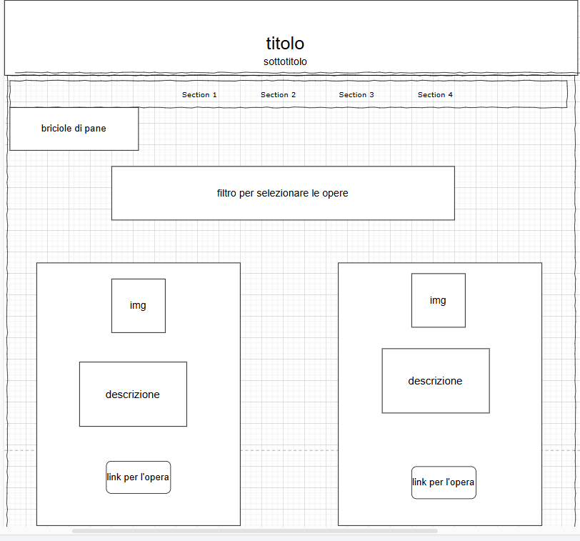
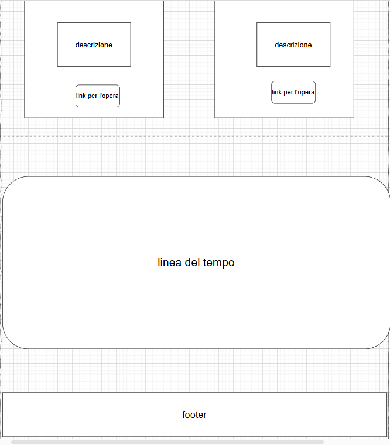

1. Idea
L'idea è quella di creare una **collezione digitale delle opere di Gian Francesco Barbieri, detto il Guercino**, uno dei più importanti artisti del Barocco italiano. Il sito web avrà lo scopo di rendere accessibile al pubblico una raccolta completa delle sue opere, con informazioni dettagliate, immagini ad alta risoluzione e strumenti di navigazione avanzati.
Il sito sarà progettato per essere **intuitivo e responsive**, garantendo un'esperienza utente ottimale su dispositivi mobili e desktop. Sarà possibile esplorare le opere per periodo, tema, tecnica e luogo di conservazione, con l'aggiunta di contenuti multimediali come audio-guide e video esplicativi.
2. Brief
Finalità e obiettivi del progetto
Il progetto ha l'obiettivo di **valorizzare il patrimonio artistico del Guercino**, rendendo le sue opere accessibili a un pubblico ampio e diversificato. Gli obiettivi principali includono:
- Digitalizzazione delle opere del Guercino.
- Creazione di un sito web moderno e interattivo.
- Integrazione di strumenti di navigazione avanzati (timeline, filtri di ricerca...).
- Promozione della conoscenza del Guercino e del suo contributo all'arte barocca.
Pubblico di riferimento
Il sito si rivolge a un pubblico ampio, che include:
- Studiosi e ricercatori: interessati a studiare le opere del Guercino in modo approfondito.
- Studenti: che utilizzano il sito come risorsa didattica.
- Appassionati d'arte: interessati a scoprire e apprezzare le opere del Guercino.
- Pubblico generale: persone senza conoscenze pregresse che vogliono avvicinarsi all'arte del Guercino.
Accesso alla risorsa
Il sito sarà accessibile da **dispositivi mobili e desktop**, con un design responsive che garantisce un'esperienza utente ottimale su qualsiasi dispositivo. L'accesso sarà **gratuito**, senza barriere di registrazione, per garantire la massima fruibilità.
Contenuti
Il sito includerà:
- Immagini ad alta risoluzione delle opere del Guercino.
- Schede descrittive per ogni opera, con informazioni su titolo, data, tecnica, dimensioni e luogo di conservazione.
- Contenuti multimediali: audio-guide e video esplicativi.
- Strumenti di navigazione: timeline interattiva, filtri di ricerca.
3. Benchmark
Idea
Esistono già alcuni siti web dedicati al Guercino, come la **Pinacoteca Civica di Cento** e la **Web Gallery of Art**, ma spesso mancano di una visione completa e organizzata delle sue opere. Il nostro progetto si distingue per l'integrazione di strumenti di navigazione avanzati e contenuti multimediali.
Contenuti Esistenti
- Pinacoteca Civica di Cento: Offre informazioni sulle opere del Guercino conservate nella sua città natale, ma manca di strumenti di navigazione avanzati.
- Web Gallery of Art: Include diverse opere del Guercino, ma l'interfaccia è datata e manca di contenuti multimediali interattivi.
4. Struttura
Mappa dei concetti
La mappa concettuale del sito è organizzata in sezioni principali:
- Home Page: Presentazione del progetto e breve biografia del Guercino.
- Collezione: Raccolta completa delle opere, organizzata per periodo, tema, tecnica e luogo di conservazione.
- Biografia: Sezione dedicata alla vita e alla carriera del Guercino.
- Servizi
Schema delle dipendenze
Lo schema delle dipendenze mostra come le diverse sezioni del sito sono collegate:
- Dalla Home Page, gli utenti possono accedere alla Collezione, alla Biografia e ai Servizi.
- La Collezione è suddivisa in sottosezioni per periodo, tema, tecnica e luogo di conservazione.
- La Biografia include approfondimenti sulla vita e la carriera del Guercino.
- I Servizi includono strumenti di navigazione avanzati come la timeline e la mappa geografica.
Categorie di un item
Ogni opera (item) sarà descritta utilizzando le seguenti categorie:
- Titolo: Titolo originale e titolo italiano.
- Data: Anno di creazione.
- Tecnica: Tecnica utilizzata (es. olio su tela, affresco).
- Dimensioni: Dimensioni dell'opera.
- Luogo di conservazione: Museo, chiesa o collezione privata.
- Descrizione: Breve descrizione storico-artistica.
- Immagine: Immagine ad alta risoluzione dell'opera.
- Audio/Video: Contenuti multimediali associati (es. audio-guide).
5. Layout
HomePage
La Home Page includerà:
- Una hero section con un'immagine di un'opera famosa del Guercino e un breve testo introduttivo.
- Link rapidi alle sezioni principali (Collezione, Biografia, Servizi).
- Una sezione con una panoramica delle opere più famose.
Esempio Grafico:

Figura 1: Wireframe della Home Page.
Collezione
La pagina della Collezione includerà:
- Filtri di ricerca per periodo, tema, tecnica e luogo di conservazione.
- Una griglia di anteprime delle opere, con titolo e immagine.
- Paginazione per navigare tra le opere.
- Una timeline interattiva che mostra l'evoluzione artistica del Guercino.
- Una mappa geografica che indica i luoghi di conservazione delle opere.
Esempi Grafici:

Figura 2: Wireframe della Pagina Collezione (Filtri e Griglia).

Figura 3: Wireframe della Pagina Collezione (Linea del tempo).
Biografia
La pagina della Biografia includerà:
- Una sezione con la vita e la carriera del Guercino.
- Immagini e approfondimenti sul contesto storico e artistico.
Servizi
La pagina dei Servizi includerà:
- Una timeline interattiva che mostra l'evoluzione artistica del Guercino.
- Una mappa geografica che indica i luoghi di conservazione delle opere.
- Strumenti di ricerca avanzata per filtrare le opere.
6. Usabilità
Architettura
Il sito sarà progettato con un'architettura chiara e intuitiva:
- Menu di navigazione principale in alto, con link alle sezioni principali.
- Breadcrumb per aiutare gli utenti a orientarsi.
- Design responsive per garantire un'esperienza ottimale su dispositivi mobili e desktop.
Aspetto e tipografia
Il design del sito sarà caratterizzato da:
- Una palette di colori ispirata al periodo barocco, con tonalità calde e dorate!!!!!!!!!!!!!!!!!!!!!!!!!!!!!!!!!!!!!!!!!!!!!!!!!!!!!!.
- Font serif per i titoli e sans-serif per il testo, per garantire leggibilità e coerenza visiva.
- Uso di immagini e icone per migliorare l'esperienza visiva.
7. Servizi
Strumenti di browsing
Il sito includerà strumenti di navigazione avanzati:
- Timeline interattiva: Mostra l'evoluzione artistica del Guercino.
- Mappa geografica: Indica i luoghi di conservazione delle opere.
- Filtri di ricerca: Permettono di filtrare le opere per periodo, tema, tecnica e luogo di conservazione.
Strumenti di interazione
Il sito includerà strumenti di interazione come:
- Zoom sulle immagini: Permette di esplorare i dettagli delle opere.
- Audio-guide: Forniscono approfondimenti sulle opere.
- Condivisione sui social media: Permette agli utenti di condividere le opere preferite.